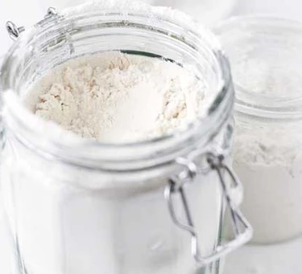

Flour

What is flour?
Flour is usually made from grinding wheat, maize, rye, barley or rice. As the main ingredient in bread, which is a main staple in many cuisines, it is one of the most common ingredients in the world.
Wheat flour is the most popular and versatile flour and there are many different varieties:
Plain flour
White flour, otherwise known as plain or all-purpose flour, contains about 75 per cent of the wheat grain, with most of the bran and wheat germ taken out. It is commonly used for cakes, pastries and biscuits. When used in cakes it is combined with a raising agent such as baking powder or bicarbonate of soda. It is also used in quick breads like soda bread, producing a more densely textured loaf. White flour is usually artificially whitened but you can buy an unbleached variety if you prefer which is an off-white colour.
Self-raising flour
To make self-raising flour, mix 100g plain flour with 1 tsp baking powder. When making cakes or bread, it is essential you use plain or self-raising flour as stated in the recipe for successful results. You can also buy self-raising flour, which has the raising agent already added. Some recipes use both self-raising flour and an additional raising agent – this will give a lighter texture, and is usually added when the dough or batter is heavier than normal to give it additional lightness.
Wholemeal or wholewheat flour
Wholemeal flour is made from the whole of the wheat grain. If the flour is steel-crushed, the wheat-germ is separated from the white part of the grain and returned to the white flour at the end of the grinding process. Wholemeal flour produces heavier results than white flour, so is often used in combination.
Strong flour
Strong white bread flour is made from 'hard' wheat varieties which are high in gluten. This makes it ideal for bread-making where dough needs to expand and rise well in order to produce a light loaf. Strong flour is not suitable for cake recipes. It usually needs to be kneaded well, and then relaxed in 'rising' or 'proving' stages to relax the gluten and increase the 'stretch' of the dough.
'00' flour
A ground wheat flour that looks like plain flour, but is a special grade, which is the perfect blend for making delicate pasta or noodles. Some chefs use '00' flour to make pizza bases, too.